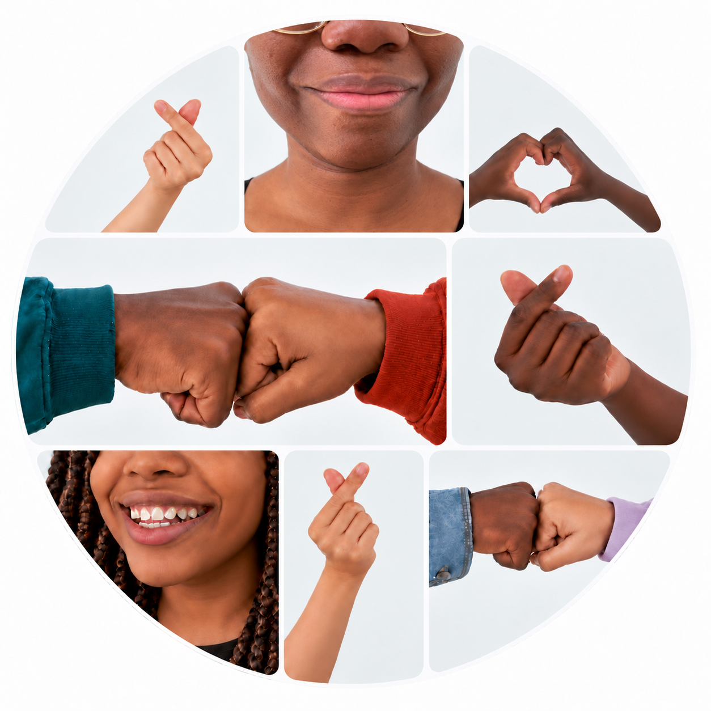

Connecting and Communicating Together (CCT)

A Locally Shaped Project With Global Possibilities
Connecting and Communicating Together (CCT) is a flexible Anderson Therapies project that brings children and young people together to explore communication, connection and belonging.
CCT can be developed with schools, colleges, health services, charities, community organisations and other partners in the UK and internationally.
Each project is co-designed with local partners and shaped by the children and young people involved. This allows it to reflect the strengths, priorities, cultures and ways of communicating within each setting.
Learning from practitioners, families and communities also contributes to the development of the Communication for Connection Framework.
Why This Matters
Communication is shaped by relationships, identity, belonging, culture and our environments.
CCT begins with what matters most to children and young people. Participants then explore how communication might help them connect with others and move towards what matters to them.
By learning together, they encounter different strengths and perspectives, develop shared ways of connecting and discover possibilities that can be difficult to create alone.
What The Project Involves
CCT is delivered through group workshops in which children and young people explore, experiment and reflect together. Each project is adapted with local partners to the children, young people and community involved. The workshops create opportunities for children and young people to:
- Explore what communication means to them
- Discover what helps them connect with others
- Experiment with different ways of communicating, such as the use of language, creativity, movement and shared activities
- Reflect on their experiences together
- Develop a shared understanding of communication and connection within their community
Where CCT Is Developing
CCT In Ghana
A CCT pilot is being developed in Accra with Talking Tips Africa Foundation and local partners, bringing together professional knowledge, cultural understanding and the experiences of Ghanaian children and young people. The project will be co-designed for the local context. Discussions are also emerging in The Gambia, Jamaica and London, including with charities, primary schools, special schools and further education settings.
Who Can Partner With CCT?
CCT can be adapted for organisations that support children and young people, including:
- Primary and secondary schools, including special schools
- Colleges and further education settings
- Community groups, youth organisations, charities and non-governmental organisations
- Health and mental health services
- Universities and professional training organisations
- Local and national government partners
CCT does not rely on formal diagnoses, assessments or identified communication needs. It brings together children and young people with different communication styles, strengths and experiences to learn from one another.
Hopes, Benefits, And Anticipated Outcomes
CCT creates opportunities for children and young people to:
- better understand themselves and one another
- build greater awareness of different communication styles, strengths and perspectives
- explore what matters to them and what might help them move towards it
- contribute their ideas to more inclusive and connected communities
- develop as peer ambassadors, with opportunities for some young people to support or co-facilitate future workshops
For the wider community, CCT aims to:
- listen to and learn from the experiences of children and young people
- develop a shared understanding of communication, connection and belonging
- strengthen relationships between children, families, practitioners and organisations
- identify practical ideas that can continue beyond the workshops
- share learning with the wider community through resources, reflection and co-facilitator training
Learning Across Communities
Each CCT project creates opportunities for local and shared learning. Insights from different settings and cultures contribute to a growing understanding of communication, connection and belonging, while informing the Communication for Connection Framework.
Working In Partnership
CCT is not a fixed programme introduced into a community. It is developed with local partners who understand their culture, context and community. Partnership opportunities may include:
- Host partner: coordinating the project locally.
- Co-facilitator partner: taking part in training and supporting delivery, reflection and shared learning throughout the project.
- Advisory partner: contributing local knowledge, cultural insight, professional expertise or lived experience.
- University or evaluation partner: helping to explore, evaluate and share what is learned through the project.
Funding
CCT is not sold directly to children, young people or families. Projects are supported through partnerships, commissioning, grants or other funding agreed with host organisations, with the aim of removing financial barriers to participation wherever possible.